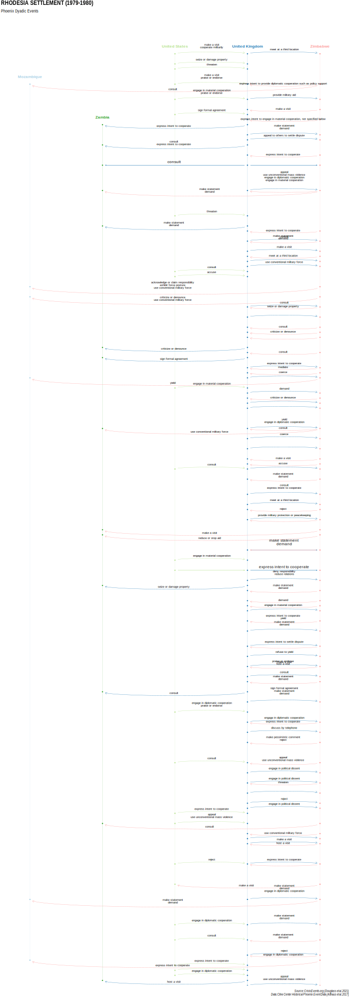

ICBe Crises 304-319
- 304 Chad/Libya Iv (1979-1979)
- 305 Goulimime-Tarfaya Rd (1979-1979)
- 306 Soviet Threat/Pak. (1979-1979)
- 307 Rhodesia Settlement (1979-1980)
- 308 Raid On Angola (1979-1979)
- 309 Us Hostages In Iran (1979-1981)
- 310 Colombia/Nicaragua (1979-1981)
- 311 Raid On Gafsa (1980-1980)
- 312 Operation Iman (1980-1980)
- 313 Operation Smokeshell (1980-1980)
- 314 Libya Threat-Sadat (1980-1980)
- 315 Solidarity (1980-1981)
- 316 Libya/Malta Oil Disp. (1980-1980)
- 317 Onset Iran/Iraq War (1980-1980)
- 318 Libya Interv./Gambia (1980-1980)
- 319 Jordan/Syria Confrnt. (1980-1980)
Back to Main Page.
View Crises 1-15; 16-31; 32-47; 48-63; 64-79; 80-95; 96-111; 112-127; 128-143; 144-159; 160-175; 176-191; 192-207; 208-223; 224-239; 240-255; 256-271; 272-287; 288-303; 304-319; 320-335; 336-351; 352-367; 368-383; 384-399; 400-415; 416-431; 432-446; 447-461; 462-476;
304 Chad/Libya Iv (1979-1979)

ICBe Narrative
id | sentence | codings_sentence |
304.1 | Another crisis for Libya, Chad, and France in equatorial Africa occurred from 12 April to 10 November 1979. | No events. |
304.2 | Pre-crisis | No events. |
304.3 | Shortly after the formation of a National Unity Government for Chad on 29 August 1978, fighting erupted once more between government and rebel forces. | FROLINAT initiated battle/clash toward Chad. |
304.4 | Rivalries among the latter and mass killings of minority Muslims in the south aggravated the situation. | No events. |
304.5 | The Malloum-Habr coalition government broke down in February 1979. | No events. |
304.6 | Thousands of Christian Saras were reported slaughtered in the capital by Habr's followers. | Chad initiated mass killing |
304.7 | By the end of February, FROLINAT leader Goukouni's forces entered N'Djamena. | FROLINAT initiated attack toward Chad. |
304.8 | And by 11 March, when the first Kano Conference on national Chad reconciliation opened, there were four competing power centers, led by Goukouni, Habr, Asil, and Kamougue. | No events. |
304.9 | France and Nigeria pressed Goukouni and Habr to share power. | Nigeria;France initiated demand toward |
304.10 | And this was done in a new Provisional State Council, Gouvernement de l'Unit Nationale Tchadienne, formed on 23 March in accordance with an agreement a week earlier. | Chad initiated institutions change |
304.11 | Goukouni became interim Head of State, following Malloum's resignation that day. | No events. |
304.12 | And in mid-April, after an inconclusive second Kano Conference from 3 to 11 April, Goukouni took over the Interior portfolio, with Habr as Defense Minister. | Libya;Nigeria initiated mediation;meeting Chad initiated leadership change |
304.13 | While they had yielded to Libyan and Nigerian pressure at Kano to enlarge GUNT, they reneged upon their return to Chad. | Chad initiated promise toward |
304.14 | It was the volte-face by Goukouni and Habr that triggered a crisis for Libya on 12 April 1979, the onset of Chad/Libya IV. | Libya experienced a start of crisis about act in this sentence;sentence 13. |
304.15 | While there was some minor Libyan troop activity in the norththat began on the 13th, and Libyan support for a secessionist movement in southern Chad, its major response did not come until 25 June, following another inconclusive reconciliation conference, mediated by Nigeria in Lagos from 26-27 May. | Libya initiated mobilization toward Chad. Libya initiated mobilization |
304.16 | The four factions represented in the Provisional State Council were absent from Lagos; however, dissidents, backed by six of Chad's neighbors, demanded the formation of a new, enlarged National Unity Government by 25 June. | Cameroon;Libya;Niger;Nigeria;Sudan;Central African Republic initiated demand toward |
304.17 | When this call went unheeded, Libya sent 2,500 troops into northern Chad aimed at Faya-Largeau. | Libya initiated invasion/occupation toward Chad. |
304.18 | The Libyan invasion, in turn, triggered a crisis for Chad and France the same day. | France;Chad experienced a start of crisis about sentence 17. |
304.19 | The former appealed to Paris not to withdraw its forces from Chad. | Chad initiated appeal toward |
304.20 | France agreed, and French reconnaissance planes and bombers played a crucial role in the Chad counteroffensive that forced the Libyans to retreat. | France initiated accept toward |
304.21 | A second Lagos Conference, the fourth concerned with Chad in 1979, met in mid-August, with all eleven Chad factions represented, along with all of Chad's neighbors and also Benin, Congo, Liberia, and Senegal. | Liberia;Nigeria;Senegal;Benin initiated meeting toward Chad. |
304.22 | The upshot was an agreement providing for the following: a cease-fire to be monitored by a peace force with contingents from states not bordering Chad, headed by the OAU Secretary-General; demilitarization of N'Djamena; amnesty for all political prisoners; the merger of all factional militias into a national army; and the formation of a broad-based transitional National Unity Government. | Organisation of African Unity initiated promise toward |
304.23 | When that government was established on 10 November 1979, the crisis ended for all three actors, Chad, France, and Libya. | Libya;France;Chad experienced a end of crisis about act in this sentence. Chad initiated institutions change |
304.24 | Yet the complex civil and international conflict over Chad continued. | No events. |
304.25 | The U.S. and the USSR were not involved in this crisis, the UN marginally so. | No events. |
ICB Dyadic Crisis Map

Phoenix Crisis Map

MIDs Crisis Map

Wikipedia Page
305 Goulimime-Tarfaya Rd (1979-1979)

ICBe Narrative
id | sentence | codings_sentence |
305.1 | A Polisario attack on a strategic road in Morocco led to a crisis for Morocco and Algeria from 1 to 25 June 1979. | No events. |
305.2 | A large-scale Polisario military operation inside Moroccan territory, on the Goulimime-Tarfaya road, triggered a crisis for Morocco on 1 June 1979. | Morocco experienced a start of crisis about act in this sentence. Polisario Front initiated attack toward Morocco. |
305.3 | The targeting of an important mineral area within Morocco was quite rare. | No events. |
305.4 | An additional incident took place on 4 June, north of Zag. | Polisario Front initiated attack toward Morocco. |
305.5 | The Moroccan response was multiple, including violence. | Morocco initiated attack toward Polisario Front. |
305.6 | Its troops met the Polisario guerrillas, losing about 20 soldiers, with a number of others wounded. | Morocco initiated battle/clash toward Polisario Front. |
305.7 | On 6 June King Hassan announced that he had ordered the Moroccan army, in the future, to exercise its "right of pursuit" whenever lives of Moroccan citizens were endangered; that decision had been taken by the Moroccan Chamber of Representatives in March. | Morocco initiated express intent toward |
305.8 | The next day Hassan appealed to the OAU. | Morocco initiated appeal toward |
305.9 | Moreover, the ambassadors of the five permanent members of the Security Council were summoned to the Foreign Ministry and told that Morocco would not stand by "with arms folded" against repeated aggression. | NA NA |
305.10 | And on the 15th Morocco requested an urgent meeting of the Security Council. | Morocco initiated appeal toward |
305.11 | The right of pursuit claim made by the king on 6 June triggered a crisis for Algeria, which feared Moroccan incursions into its territory. | Algeria experienced a start of crisis about sentence 7. |
305.12 | On the l0th Algeria appealed to the incumbent Chairman of the OAU, Sudan's President Numeiri. | Algeria initiated appeal toward |
305.13 | Ambassadors of the permanent members of the Security Council were summoned to Algeria's Foreign Ministry as well. | United Nations initiated meeting toward Algeria. Algeria initiated meeting toward United Nations. |
305.14 | A major Polisario offensive took place at Tan Tan on 13 June. | Polisario Front initiated attack toward Morocco. |
305.15 | This city had been the victim of an earlier attack in January 1979. | No events. |
305.16 | The Security Council discussed the issue from 15 to 25 June; no resolution was passed. | United Nations initiated discussion toward United Nations. |
305.17 | On the 25th Morocco requested the indefinite suspension of the UN debate, having perceived the lowering of tensions after the incidents at the beginning of the month. | Morocco initiated appeal;reject toward |
305.18 | Polisario attacks into Morocco had been temporarily stopped; and it did not exercise its right of pursuit into Algeria. | Polisario Front initiated cease fire toward Morocco. |
305.19 | Morocco's request ended the crisis, but there was no agreement between the adversaries. | Morocco initiated appeal toward |
305.20 | The OAU "Committee of Wise Men" met on 23 June to discuss the conflict and set forth recommendations. | Organisation of African Unity initiated meeting toward Organisation of African Unity. |
305.21 | There was no superpower involvement during the 1979 crisis. | No events. |
305.22 | However, Polisario was armed with Soviet-made antiaircraft missiles, tanks, and artillery, while the United States supplied King Hassan with large amounts of military equipment, including jet fighters and radar. | Soviet Union initiated military cooperation toward Polisario Front. United States of America initiated military cooperation toward Morocco. |
305.23 | (In subsequent years Morocco adopted a strategy of building massive walls of sand across the Sahara Desert, advancing steadily and bringing nearly one-third of the territory of Western Sahara and almost all of its population inside their ramparts. | No events. |
305.24 | Since 1981 Polisario has been unable to breach the advancing walls. | No events. |
305.25 | Nonetheless, despite military losses, Polisario has scored important diplomatic victories: it was admitted into the OAU in 1982; and in November 1984 the Sahrawi Arab Democratic Republic was seated as a full-fledged member. | No events. |
305.26 | In protest, Morocco quit the OAU. | No events. |
305.27 | It was supported by Zaire, which suspended its participation.) | No events. |
ICB Dyadic Crisis Map

Phoenix Crisis Map

MIDs Crisis Map

Wikipedia Page
306 Soviet Threat/Pak. (1979-1979)

ICBe Narrative
id | sentence | codings_sentence |
306.1 | Soviet statements implying USSR intervention in the event of war between Afghanistan and Pakistan created a low-threat crisis for Pakistan from 1 June to 3 July 1979. | No events. |
306.2 | BackgroundHostile relations between Afghanistan and Pakistan date to Pakistani independence in 1947 when Afghanistan demanded the creation of a separate Pushtu-speaking Pathan state in part of Pakistan's North West Frontier Province. | No events. |
306.3 | Several crises occurred over this issue, in 1949-50, 1955, and 1961-62. | No events. |
306.4 | Between 1976 and 1978 Kabul dropped its insistence on self-determination for the Pathans on the Pakistani side of the border, and an active search for a solution began. | No events. |
306.5 | After the marxist coup in Afghanistan in April 1978 clashes between Afghan government forces and anti-communist rebels led to a large-scale influx of refugees into Pakistan. | No events. |
306.6 | The nature and length of the border made it almost impossible for Pakistan to control the border crossings. | No events. |
306.7 | A crisis was triggered for Pakistan by a statement in Pravda on 1 June 1979 accusing it of allowing Afghan rebel groups to attack Afghanistan from its territory, and indicating that the USSR would not remain indifferent. | Pakistan experienced a start of crisis about speech in this sentence. Soviet Union initiated accuse toward |
306.8 | Pakistan, although perceiving its military strength as sufficient to cope with direct Afghan threats, viewed a Soviet-backed and Soviet-protected Afghanistan with alarm. | Pakistan experienced a fear about act in this sentence;sentence 7. |
306.9 | The Soviet statement, which charged Pakistan with willingly providing border sanctuaries to the Afghan rebels, made it clear that Moscow would intervene in the event of war between Afghanistan and Pakistan. | NA No events. |
306.10 | Pakistan responded the same day with a denial of Soviet allegations, adding that it adhered strictly to the five principles of peaceful coexistence and calling for a resumption of normal relations between Pakistan and Afghanistan. | Pakistan initiated reject toward |
306.11 | On 11 June the Tass news agency charged that the U.S. was training Afghan rebel forces in Pakistan. | Soviet Union initiated accuse toward |
306.12 | This was denied by a spokesperson for the State Department: the U.S., as Pakistan's long-time patron, extended political support to its client. | United States of America initiated reject toward |
306.13 | The dialogue between Afghanistan and Pakistan was renewed on 1 July when Afghan Foreign Minister Shah Mohammad Dost arrived in Pakistan for talks with President Zia-ul-Haq. | Afghanistan initiated discussion;meeting;meeting toward Pakistan. |
306.14 | The crisis ended on 3 July with a joint decision to continue the talks: the two parties agreed to prepare the ground for a summit meeting. | Pakistan experienced a end of crisis about speech in this sentence. Afghanistan initiated express intent;promise toward |
306.15 | It was also agreed that the refugees in Pakistan would return to Afghanistan as soon as possible, on a voluntary basis. | Pakistan initiated unspecified cooperation toward Afghanistan. Afghanistan initiated humanitarian aid toward Pakistan. |
306.16 | (Agreement between the two parties did not alter the situation. | No events. |
306.17 | The flow of Afghan refugees into Pakistan continued, as did attacks on Afghanistan by rebels operating from Pakistani sanctuaries. | No events. |
306.18 | A summit meeting never took place. | No events. |
306.19 | Six months later the USSR invaded Afghanistan and imposed a pro-Soviet regime. | Soviet Union initiated invasion/occupation toward Afghanistan. |
306.20 | Afghan anti-communist guerrillas engaged in warfare against Soviet forces lasting a decade. | No events. |
306.21 | The UN was not involved in this crisis. | No events. |
ICB Dyadic Crisis Map

Phoenix Crisis Map

MIDs Crisis Map

Wikipedia Page
307 Rhodesia Settlement (1979-1980)
ICBe Narrative
id | sentence | codings_sentence |
307.1 | Rhodesia, Botswana, Mozambique, and Zambia were enmeshed in the decisive crisis of the protracted conflict over black majority rule in Rhodesia from 15 July 1979 to 4 March 1980. | No events. |
307.2 | Background and Pre-crisisGuerrilla warfare against Rhodesia, as noted, began in 1972 and expanded in scope and intensity in 1976. | Zimbabwe African National Union;Zimbabwe People’s Revolutionary Army initiated attack toward Rhodesia. |
307.3 | Operations were carried out from bases in Botswana, Mozambique, and Zambia. | Mozambique;Zambia;Botswana initiated military cooperation;unspecified cooperation toward Zimbabwe African National Union;Zimbabwe People’s Revolutionary Army. |
307.4 | On 13 April 1979 Rhodesian forces captured 14 people in Francistown, Botswana, which had been occupied by ZAPU, destroying the ferry between Botswana and Zambia, allegedly used for supplies to ZIPRA. Clashes between Rhodesian and Mozambiquean forces, the latter better equipped than those of Botswana, were frequent in 1979. | Rhodesia initiated battle/clash toward Mozambique. Rhodesia initiated attack toward Botswana. Rhodesia initiated human rights violation;restrict rights |
307.5 | The attacks were primarily on economic targets. | Zimbabwe People’s Revolutionary Army initiated attack toward Rhodesia. |
307.6 | Some of the more serious recorded attacks took place on 9-10 February, on the Mapai-Pafuri road; on 20 February, on the Chimoio guerrilla base; the 14 March bombing of Chokene; and the 18-21 April bombings of Mozambique army positions in the Gaza Province. | Zimbabwe People’s Revolutionary Army initiated attack toward Rhodesia. |
307.7 | In Zambia, as well, raids were numerous. | Rhodesia initiated attack;border violation;battle/clash toward Zambia. |
307.8 | Zambia was the target several times in 1979, on 26 June, 1 and 20 July, 23 August, and throughout the month of October. | No events. |
307.9 | After the elections in Rhodesia in April 1979 a new government led by Bishop Abel Muzorewa took office on 31 May. Muzorewa quickly made it clear that his government intended to continue the policy of preemptive attacks on guerrilla bases and economic targets in Botswana, Mozambique, and Zambia. | Rhodesia initiated leadership change Zimbabwe Rhodesia initiated leadership change |
307.10 | The war inside Rhodesia-Zimbabwe escalated quite rapidly, with reports of about 1,000 people being killed each month. | Zimbabwe Rhodesia initiated attack;human rights violation;mass killing |
307.11 | The number of guerrillas operating within Rhodesia during July was estimated at about 12,000. | No events. |
307.12 | Early in July Muzorewa visited the U.S. and U.K. in order to seek recognition for Zimbabwe and to get economic sanctions lifted. | Zimbabwe initiated appeal toward |
307.13 | A crisis for Rhodesia was triggered internally on 15 July 1979 when a large number of security forces loyal to Ndabamingi Sithole, the leader of the opposition ZANU Party, were killed -- apparently by regular Rhodesian forces. | Rhodesia experienced a start of crisis about act in this sentence. Rhodesia initiated human rights violation;mass killing Zimbabwe experienced a start of crisis about act in this sentence. Zimbabwe initiated human rights violation;mass killing |
307.14 | Internal events, peaking with the massacre, made it clear to Bishop Muzorewa that his regime did not have the ability to cope with the issues at hand. | No events. |
307.15 | Further, on 18 July the High Court ruled that seven MPs of the Zimbabwe Democratic Party could take their seats in Parliament, thereby causing Muzorewa to lose parliamentary control. | Zimbabwe initiated leadership change |
307.16 | On 25 July U.K. Prime Minister Margaret Thatcher announced that recognition of independence and sovereignty would not be forthcoming as long as the government and constitutional structure of Muzorewa's Zimbabwe-Rhodesia remained unchanged. | United Kingdom initiated demand toward |
307.17 | From 1-8 August the Commonwealth heads of government met in Lusaka, Zambia, and decided on an all-party conference to end the Rhodesian conflict. | Commonwealth of Nations initiated meeting toward Commonwealth of Nations. |
307.18 | The conference would be held in London in September. | No events. |
307.19 | Invitations were sent to the Zimbabwe-Rhodesia government and to members of the Patriotic Front, along with a draft outline for a new constitution for Zimbabwe. | No events. |
307.20 | The trigger to Botswana's crisis was an attack by Rhodesian troops and helicopters on ZIPRA bases at Francistown on 8 August. | Botswana experienced a start of crisis about act in this sentence. Rhodesia initiated attack toward Zimbabwe People’s Revolutionary Army. |
307.21 | The response was immediate -- an air attack on the helicopters returning to Rhodesia. | Botswana initiated attack toward Rhodesia. |
307.22 | On 15 August Rhodesia responded to its crisis by accepting the invitation issued at the end of the Lusaka Commonwealth Conference: Prime Minister Muzorewa's decision was based upon the need to stop the internal challenges to his regime and to achieve some political stability. | Rhodesia experienced a policy about speech in this sentence. Rhodesia initiated accept toward |
307.23 | A crisis for Mozambique was triggered on 5 September when important economic targets in the Limpopo Valley were attacked by Rhodesian forces. | Mozambique experienced a start of crisis about act in this sentence. Rhodesia initiated attack toward Mozambique. |
307.24 | Severe damage caused a reduction in the country's capacity to wage war. | No events. |
307.25 | Mozambique responded the same day with strong resistance by its army. | Mozambique initiated attack toward Rhodesia. |
307.26 | Fighting in the valley continued until 10 September, and attacks on other targets were reported on the 13th, as well as on 27 September to 1 October and on 11-13 and 18-20 October. | Mozambique initiated battle/clash toward Rhodesia. |
307.27 | During October Muzorewa sent a message to Zambia's president threatening to take nonmilitary measures if Kaunda did nothing to stop ZIPRA infiltration into Rhodesia-Zimbabwe. | Zimbabwe Rhodesia initiated ultimatum toward |
307.28 | Indeed, this threat was realized on 5 November when trains carrying maize shipments to Zambia were prevented from passing through Rhodesia. | Zimbabwe Rhodesia initiated end economic cooperation toward Zambia. Zimbabwe initiated end economic cooperation toward Zambia. |
307.29 | British Foreign Secretary Lord Carrington opened the constitutional conference on Rhodesia at Lancaster House on 10 September. | United Kingdom initiated meeting toward Zimbabwe African National Union;Zimbabwe People’s Revolutionary Army;Zimbabwe. United Kingdom initiated meeting toward Rhodesia. |
307.30 | Lord Carrington played a very strong role in the negotiation process, often dictating the pace and substance of the talks. | United Kingdom initiated mediation toward Rhodesia;Zambia. |
307.31 | Specifically, he used the possibility of recognition and an end of sanctions as an incentive to Muzorewa and as a threat to the PF. By 15 November some progress had been made at Lancaster House: agreement on transitional arrangements for Rhodesia had been reached; and the British government had proposed the establishment of a Cease-Fire Commission on which military commanders of both sides would be represented. | No events. |
307.32 | Despite apparent political progress, Rhodesia expanded its economic pressure on Zambia with a series of major military attacks. | Rhodesia initiated attack toward Zambia. |
307.33 | A crisis for Zambia was triggered on 17 November when Rhodesian forces attacked a bridge on the main road to Tanzania; Zambian villagers were killed, and another vital bridge linking Zambia to Malawi and Mozambique was blown up. | Zambia experienced a start of crisis about act in this sentence. Rhodesia initiated attack toward Zambia. |
307.34 | On the 20th Kaunda responded by declaring a full alert, canceling all military leaves, and announcing a call-up of reserves. | Zambia initiated raise in alert |
307.35 | On 12 December Lord Soames, newly appointed Governor of Rhodesia for the interim period, arrived in Salisbury to oversee the cease-fire, elections, and the transfer of government. | Rhodesia initiated meeting toward United Kingdom. |
307.36 | The crises for Botswana and Mozambique ended with a cease-fire on 21 December. | Mozambique;Botswana experienced a end of crisis about act in this sentence. Rhodesia initiated cease fire toward Mozambique;Botswana. Mozambique;Botswana experienced a end of crisis about act in this sentence. Zimbabwe initiated cease fire toward Mozambique;Botswana. |
307.37 | The cease-fire culminated after months of mediation efforts on the part of Lord Carrington, in which he made proposals, issued ultimatums, and tried to allow the parties to save face. | No events. |
307.38 | While Lord Carringtons strong mediation role sometimes angered the negotiating parties, his efforts did help lead to the Lancaster House accords on 21 December. | No events. |
307.39 | Zambia's crisis ended on 31 January 1980 when its border with Zimbabwe was reopened, once the situation had stabilized. | Zambia experienced a end of crisis about act in this sentence. Zimbabwe initiated end blockade toward Zambia. |
307.40 | And on 4 March 1980, with the election of Robert Mugabe, former leader of the Mozambique-based ZANU, as Prime Minister of the new state of Zimbabwe, the crisis terminated for Rhodesia as well. | Rhodesia;Zimbabwe experienced a end of crisis about act in this sentence. Zimbabwe initiated leadership change |
307.41 | United Nations activity consisted of a Security Council resolution, passed on 23 November 1979, condemning Rhodesia for its raids into Zambia and calling for full compensation. | United Nations initiated disapprove toward |
307.42 | A condemnation of Rhodesia was also issued by the OAU. | Organisation of African Unity initiated disapprove toward |
307.43 | The United States supported the Lancaster House discussions. | United States of America initiated general political support toward United Kingdom. |
307.44 | The Soviet Union provided military aid and advisors to ZIPRA.(Following the elections in Zimbabwe, internal unrest persisted, especially in Matabeleland -- where Joshua Nkomo, former leader of ZAPU/ZIPRA, enjoyed the total support of his fellow Ndebele tribespeople.) | Soviet Union initiated military cooperation toward Zimbabwe People’s Revolutionary Army. |
ICB Dyadic Crisis Map

Phoenix Crisis Map

MIDs Crisis Map

Wikipedia Page
308 Raid On Angola (1979-1979)

ICBe Narrative
id | sentence | codings_sentence |
308.1 | A South African incursion into Angola caused another brief crisis for Angola from 28 October to 2 November 1979. | No events. |
308.2 | Background and Pre-crisisIn September 1979 Augustino Neto, who had led Angola to independence and had been its president since 1975, died. | Angola initiated leadership change |
308.3 | A day after his death Angola reported a South African attack on several economic targets in southern Angola by troops stationed in South-West Africa. | South Africa initiated attack toward Angola. |
308.4 | Then, on 13 October, reportedly for the first time, Angolan forces crossed into South-West Africa. | Angola initiated deployment to area toward South Africa. |
308.5 | On 28 October South African troops attacked roads and bridges 190 kilometers inside Angola, in the Sierra da Leba area. | Angola experienced a start of crisis about act in this sentence. South Africa initiated attack toward Angola. |
308.6 | Angola responded on the 31st with an appeal to the United Nations. | Angola initiated appeal toward |
308.7 | The Angolan ambassador to Belgium and the MPLA's Politburo were especially vocal in their accusations of South African hostile activity. | Angola initiated disapprove toward |
308.8 | Angola's crisis ended on 2 November when the Security Council adopted another resolution condemning South Africa and calling for an immediate SADF withdrawal. | Angola experienced a end of crisis about speech in this sentence. United Nations initiated demand toward |
308.9 | The U.S.'s abstention from the vote was perceived unfavorably by Angola. | No events. |
308.10 | There was no change in the Angola/South Africa relationship after the crisis ended and no reports of withdrawal by the SADF from Angola at the end of the raids. | No events. |
308.11 | The stalemate continued. | No events. |
308.12 | There was no regional organization activity during the crisis, though earlier, on 6-20 July, the OAU Council of Ministers, as well as the OAU heads of state and government, had met to discuss the ongoing dispute between South Africa and Angola. | No events. |
308.13 | Neither the U.S. nor the USSR was involved in this crisis. | No events. |
ICB Dyadic Crisis Map

Phoenix Crisis Map

Wikipedia Page
309 Us Hostages In Iran (1979-1981)

ICBe Narrative
id | sentence | codings_sentence |
309.1 | A crisis for the U.S. and Iran over American hostages held in Iran lasted from 4 November 1979 to 20 January 1981. | No events. |
309.2 | Background and Pre-crisisOn 11 February 1979 an Islamic fundamentalist movement led by Ayatullah Khomeini established a new regime in Iran to replace the exiled Muhammad Riza Shah. | Iran initiated institutions change;leadership change |
309.3 | During the course of government efforts to crush the power of the clergy -- 90 percent of Iran's population belonged to Shiite Islam -- Ayatullah Khomeini had been exiled from Iran in 1963, after leading students in a protest march against the shah. | No events. |
309.4 | The shah's regime was protected by the Savak -- a secret police force known for its harsh methods -- and was bitterly opposed by many Iranians. | No events. |
309.5 | The U.S. was viewed by anti-shah Iranians as propping up the shah, exploiting Iran's oil, profiting from the enormous sale of arms, and helping the Savak. | No events. |
309.6 | Two factions joined forces to overthrow the shah: a coalition of the clergy, masses of the Muslim faithful, and the traditional merchants of the bazaar; and the emerging class of Westernized nationalist students and intellectuals. | No events. |
309.7 | On 26 October 1979, four days after the shah had been admitted to a New York hospital, young Iranian revolutionaries met and planned a sit-in at the U.S. embassy in Teheran. | No events. |
309.8 | The previous week the provisional government of Prime Minister Mehdi Bazargan had turned marching demonstrators away from the U.S. embassy. | Iran initiated end riot |
309.9 | On 4 November a crisis was triggered for the U.S. when some 400 Iranian students, acting under the inspiration of the new revolutionary regime in Teheran, broke away from one of Teheran's frequent demonstrations and stormed the U.S. embassy. | United States of America experienced a start of crisis about act in this sentence. Iran initiated protest |
309.10 | U.S. marines held them back for a time with tear gas while diplomats within tried to shred secret documents. | United States of America initiated battle/clash toward Iran. United States of America initiated fortify |
309.11 | Minutes later the students occupied the embassy, indicating that this had been done in order to protest the admission of the shah to the U.S. for medical care. | Iran initiated disapprove toward |
309.12 | As support for the students grew, a decision was made to put the U.S. hostages on trial if Washington did not return the shah to Iran. | Iran initiated ultimatum toward |
309.13 | The U.S. rejected this demand two days later. | United States of America initiated reject toward |
309.14 | On the 6th, as well, the provisional Bazargan government collapsed. | Iran initiated coup;leadership change |
309.15 | In the following days President Carter sent two representatives, Ramsey Clark and William Miller, to Iran to seek to secure the release of the hostages. | United States of America initiated appeal toward |
309.16 | Khomeini would brook no compromise on his demand that the shah be returned to Iran for trial. | Iran initiated demand toward |
309.17 | On 10 November all Iranian students in the U.S. without legal documents were ordered to leave. | United States of America initiated restrict rights |
309.18 | Two days later U.S. oil purchases from Iran were discontinued. | United States of America initiated end economic cooperation toward Iran. |
309.19 | The following day U.S. and British naval vessels began maneuvers in the Arabian Sea. | United Kingdom;United States of America initiated deployment to area;exercise |
309.20 | Iran called for a meeting of the Security Council on 13 November. | Iran initiated appeal toward |
309.21 | All Iranian assets in the United States were frozen the following day, and the U.S. initiated action against Iran in the International Court of Justice. | United States of America initiated accuse toward |
309.22 | On 20 November Iran suddenly released all black and female U.S. hostages. | Iran initiated provide rights;reduce human rights violation |
309.23 | An internal political struggle began between the students and the clergy, on the one hand, and the secular political leaders in Iran, on the other. | Iran experienced a regime/government change. |
309.24 | After receiving medical treatment in the U.S., the shah went to Panama on 15 December. | No events. |
309.25 | On that day, too, the International Court ordered the return of the U.S. embassy in Teheran to U.S. control, while the Iranians declared that the trial of the hostages would certainly take place. | Iran initiated express intent toward |
309.26 | The U.S. approached the Security Council for economic sanctions, but the Soviet Union voted against the draft resolution, thus preventing its approval. | United States of America initiated appeal toward |
309.27 | Major efforts at negotiation began in January 1980. | No events. |
309.28 | The UN set up a five-member commission under Secretary-General Waldheim to inquire into Iran's grievances. | United States of America initiated appeal toward |
309.29 | The U.S., in an effort not to provoke Iran further, delayed imposing formal economic sanctions on 6 February. | United States of America initiated economic cooperation toward Iran. |
309.30 | On the 18th Iran's President Bani-Sadr authorized a visit by the UN commission. | Iran initiated accept toward |
309.31 | However, when it arrived in Iran on the 23rd, Khomeini announced that the hostage issue would be decided by the new Iranian Majlis, to be elected in March. | Iran initiated express intent toward |
309.32 | The ayatullah also called upon the militant students not to allow members of the commission to see the hostages until the commission's report was published. | No events. |
309.33 | On 10 March the UN commission met with the Revolutionary Council. | United Nations initiated meeting toward Iran. |
309.34 | When the commission members felt they had reached an impasse, they gave up. | United Nations initiated break off negotiations toward Iran. |
309.35 | Parliamentary elections in Iran were postponed on 22 March. | Iran initiated restrict rights |
309.36 | The same day, at a meeting of the U.S.'s National Security Council, President Carter authorized a plan to rescue the hostages. | United States of America experienced a policy about act in this sentence. United States of America initiated provide rights;reduce human rights violation United States of America experienced a policy about act in this sentence. Iran initiated provide rights;reduce human rights violation |
309.37 | The U.S. broke diplomatic relations with Iran on 7 April. | United States of America initiated break off negotiations toward Iran. |
309.38 | And on the 11th the fateful U.S. decision was taken to send an airborne rescue mission to Iran. | United States of America experienced a policy about act in this sentence. United States of America initiated deployment to area |
309.39 | U.S. helicopters landed in Iran on 24 April. | United States of America initiated border violation;deployment to area toward Iran. |
309.40 | However, a collision between two helicopters, causing the death of eight U.S. soldiers, led Carter to abort the mission. | United States of America experienced a defeat about act in this sentence. United States of America initiated battle/clash;deployment to area;withdraw from area toward Iran. United States of America experienced a defeat. |
309.41 | The U.S. attempt to rescue the hostages by military means triggered a crisis for Iran on 24 April 1980. | Iran experienced a start of crisis about sentence 39. |
309.42 | By the end of the month Iran had responded by dispersing the hostages among 16 locations. | Iran initiated human rights violation;restrict rights |
309.43 | Secretary of State Vance resigned on the 27th and was replaced by Senator Edmund Muskie. | United States of America initiated leadership change |
309.44 | The shah died on 27 July in Egypt. | No events. |
309.45 | In September a German diplomat in Washington informed Muskie that a close associate of Khomeini wanted to meet urgently in Bonn with senior representatives of the U.S. government to work out conditions for the release of the hostages. | United States of America experienced a discover fact about speech in this sentence. Iran initiated appeal toward |
309.46 | A week later Sadeq Tabatabai met with U.S. Deputy Secretary of State Warren Christopher. | United States of America initiated meeting toward Iran. Iran initiated meeting toward United States of America. |
309.47 | The former agreed, on 22 September, to inform Khomeini of U.S. proposals, but on that day war broke out between Iran and Iraq, and the hostage issue was set aside. | Iran initiated declaration of war toward Iraq. |
309.48 | In November, two days before the U.S. presidential elections, the Iranian Parliament adopted the conditions outlined by Khomeini for the release of the hostages. | Iran initiated accept toward |
309.49 | Algeria was asked to serve as the mediator. | Iran initiated express intent toward |
309.50 | The Algerian mediators controlled the transmission of messages between the two parties, often evaluating both sides arguments and making suggestions for compromise. | No events. |
309.51 | In December Iran demanded $24 billion from the U.S. to cover its claims on frozen Iranian assets and property taken by the shah and his family. | Iran initiated demand toward |
309.52 | However, by early January 1981 the claim had been reduced to $9.5 billion. | Iran initiated demand toward |
309.53 | Christopher flew to Algiers to work out a complex international agreement with Algeria's Foreign Minister, Muhammad Ben Yahya. | United States of America initiated meeting toward Algeria. |
309.54 | The final documents were signed in Algiers on 20 January; and later that day word was received in Washington that the hostages had been freed -- 35 minutes after Ronald Reagan was installed as President of the United States. | United States of America initiated settle dispute;sign formal agreement toward Iran. United States of America experienced a discover fact about act in this sentence. Iran initiated provide rights;reduce human rights violation |
309.55 | Unsuccessful negotiation and mediation efforts were made throughout the crisis by Swiss and West German diplomats, as well as by private citizens. | Germany;Vatican City;Palestine Liberation Organization;Switzerland initiated mediation toward United States of America;Iran. |
309.56 | Pope John Paul II and Yasser Arafat of the PLO also tried to mediate between the two adversaries. | No events. |
ICB Dyadic Crisis Map

Phoenix Crisis Map

MIDs Crisis Map

Wikipedia Page
310 Colombia/Nicaragua (1979-1981)

ICBe Narrative
id | sentence | codings_sentence |
310.1 | Colombia and Nicaragua were the adversaries in a crisis over long-standing competing claims to the San Andrs Archipelago. | No events. |
310.2 | It lasted from 12 December 1979 to 8 July 1981. | No events. |
310.3 | BackgroundThe roots of this territorial conflict can be traced to the era of Spain's colonial rule. | No events. |
310.4 | In 1803 a Spanish Royal Order allocated the islands of the San Andrs Archipelago, along with three uninhabited cays, Quita Sueo, Roncador, and Serrana, to the viceroyalty of Santa F de Bogot, precursor to present-day Colombia and Panama, extending to the Mosquito Coast. | No events. |
310.5 | In 1853 Nicaragua claimed sovereignty over the Atlantic coast and its nearby islands. | Nicaragua experienced a territory about act in this sentence. Nicaragua initiated express intent toward |
310.6 | So too did independent Colombia. | Colombia initiated express intent toward |
310.7 | The United States, which had controlled the economically valuable cays since 1869, took possession in 1919. | United States of America initiated assert political control over toward Colombia;Nicaragua. |
310.8 | On 24 March 1928 the Barcenas Meneses-Esguerra Treaty between Colombia and the U.S. recognized the former's sovereignty over the San Andrs Islands. | United States of America initiated sign formal agreement toward Colombia. |
310.9 | A follow-up agreement between them on 10 April gave Colombia fishing rights around the cays but recognized that sovereignty over these reefs remained in dispute. | United States of America initiated sign formal agreement toward Colombia. |
310.10 | Nicaragua, which was occupied by U.S. marines in 1928, accepted the Barcenas Meneses-Esguerra Treaty on 6 March 1930. | Nicaragua initiated accept toward |
310.11 | A much later agreement between Washington and Bogot, the Vasquez-Saccio Treaty of 8 September 1972, accorded sovereignty over the cays to Colombia and divided fishing rights equally between the two states. | Colombia initiated express intent toward |
310.12 | The treaty was ratified by Colombia -- but not by the U.S. because of intense lobbying by the Somoza regime in Nicaragua. | United States of America initiated reject toward |
310.13 | The ratification process was rescheduled for January 1980. | No events. |
310.14 | On 12 December 1979 Nicaragua claimed jurisdiction over a 200-mile continental shelf, triggering a crisis for Colombia. | Colombia experienced a start of crisis about speech in this sentence. Nicaragua initiated express intent toward |
310.15 | Bogot's initial response, on the 20th, was to repudiate the claim. | Colombia initiated reject toward |
310.16 | On 26 January 1980 the United States urged a judicial solution to the territorial dispute. | United States of America initiated appeal toward |
310.17 | Nicaragua escalated the crisis on 4 February by issuing a "white book" that claimed all of the San Andrs Archipelago; at the same time it indicated a willingness to negotiate. | Nicaragua initiated express intent toward |
310.18 | Two days later Colombia rejected negotiations with Nicaragua. | Colombia initiated reject toward |
310.19 | Its major response to the crisis, on 7 February, was to reinforce bases in and around the San Andrs Islands and to deploy three surface warships and a submarine to the area. | Colombia initiated deployment to area;fortify |
310.20 | This high-visibility signal of Colombia's intent to use force, if necessary, triggered a crisis for Nicaragua. | Nicaragua experienced a start of crisis about sentence 19. |
310.21 | In the event, no violence occurred. | No events. |
310.22 | Rather, Nicaragua responded with persistent pressure in an effort to block U.S. ratification of the 1972 treaty between Colombia and the United States. | Nicaragua initiated appeal;demand toward |
310.23 | The ratification process took another 18 months, until 7 July 1981, when the U.S. Senate ratified the treaty, which formalized Colombia's sovereignty over the long-disputed islands and cays. | United States of America experienced a policy about act in this sentence. United States of America initiated accept toward |
310.24 | This ended Colombia's crisis, in victory, and Nicaragua's crisis, in defeat. | Colombia;Colombia;Nicaragua;Nicaragua experienced a end of crisis about sentence 23. |
310.25 | The U.S., as noted, was very active throughout and played a crucial role in crisis resolution. | No events. |
310.26 | Neither the USSR nor the OAS was involved. | No events. |
310.27 | And the UN was involved only indirectly: Colombia referred its grievance to the UN Conference on the Law of the Sea, which was unable to settle the dispute. | Colombia initiated disapprove toward |
ICB Dyadic Crisis Map

Phoenix Crisis Map

MIDs Crisis Map

311 Raid On Gafsa (1980-1980)

ICBe Narrative
id | sentence | codings_sentence |
311.1 | Tunisia and Libya were the protagonists in a crisis from 27 January to 30 April 1980. | No events. |
311.2 | BackgroundSeveral issues contributed to strained relations between these North African Arab neighbors. | No events. |
311.3 | One was a long-standing dispute over the delimitation of the continental shelf in the Gulf of Syrte: a ruling by the International Court of Justice had not yet been made. | No events. |
311.4 | Another was a failed Libyan attempt at union in January 1974: the merger was formally proclaimed, but Tunisia withdrew within a few weeks. | No events. |
311.5 | These and other bilateral matters were exacerbated by acute differences in character and leadership style between President Bourguiba of Tunisia and Libya's Colonel Qaddhafi. | No events. |
311.6 | A crisis for Tunisia was triggered on the night of 26-27 January 1980 when a group of 50 Tunisian insurgents crossing the border from Algeria attacked and captured army and police installations in the oasis town of Gafsa, killing 40 persons. | Tunisia experienced a start of crisis about act in this sentence. Libya initiated attack;invasion/occupation toward Tunisia. Tunisia experienced a start of crisis about act in this sentence. Tunisia initiated attack;invasion/occupation |
311.7 | Tunisian security forces regained control of the town in the evening of the 27th. | Tunisia initiated assert political control over toward Libya. Tunisia initiated assert political control over |
311.8 | Interrogation of prisoners revealed that they had been trained in Libya, with the goal of forming a pro-Libyan "revolutionary" government that would seek and receive Libyan military aid. | Tunisia experienced a discover fact about act in this sentence. Libya initiated military cooperation toward Libya. Tunisia experienced a discover fact about act in this sentence. Libya initiated military cooperation toward Tunisia. |
311.9 | Tunisia immediately sought diplomatic, economic, and military aid from Western and Arab states. | Tunisia initiated appeal toward |
311.10 | France sent military transport planes and advisors to Tunisia on 28 January, triggering a crisis for Libya. | Libya;Tunisia experienced a start of crisis about act in this sentence. France initiated military cooperation toward Tunisia. |
311.11 | This was followed by the dispatch of three French warships and five submarines on the 30th to patrol off the Tunisian/Libyan coast. | France initiated deployment to area |
311.12 | The same day Tunisia expelled Libya's ambassador. | Tunisia initiated break off negotiations toward Libya. |
311.13 | On the 31st the U.S. defense secretary announced that the delivery of military equipment to Tunisia would be expedited. | United States of America initiated express intent toward |
311.14 | Libya, too, responded to its perceived threat with several measures. | No events. |
311.15 | On 4 February the French embassy in Tripoli was burned by a crowd of demonstrators. | Libya initiated riot |
311.16 | France's cultural center in Benghazi was ransacked the same day. | No events. |
311.17 | On the 5th France recalled its ambassador to Libya. | France initiated withdraw diplomats toward Libya. |
311.18 | On the 7th Qaddhafi accused Paris of a new imperialism in Africa. | Libya initiated accuse toward |
311.19 | Three days later he threatened war against France. | Libya initiated threaten toward |
311.20 | An emergency meeting of Libya's General People's Congress on 12 February demanded that France withdraw its "invasion force" from Tunisia. | Libya initiated demand toward |
311.21 | It also called for an alliance with the "oppressed people" of Tunisia in their armed struggle to overthrow the Bourguiba regime. | Libya initiated appeal toward |
311.22 | That day French military aircraft were withdrawn from Tunisia. | France initiated withdraw from area toward Tunisia. France initiated withdraw from area |
311.23 | Crisis tension declined on 27 February when Qaddhafi declared the confrontation with Tunisia over, after the "fall" of Tunisia's Prime Minister Hedi Nouira, who was hospitalized in Paris. | Libya experienced a end of crisis about act in this sentence. Tunisia initiated leadership change |
311.24 | The next day Libya's leader said that the possibility of a serious confrontation with France, too, had ended following President Giscard d'Estaing's statement on the 26th that French forces had not actively intervened in the Gafsa fighting. | Libya initiated express intent toward |
311.25 | Relations between Tunisia and Libya remained severely strained during March and the first half of April 1980, particularly after the execution on 12 April of 15 Tunisians convicted of participating in the Gafsa raid. | Libya initiated human rights violation |
311.26 | By the end of April a more conciliatory tone was evident in statements by the two adversaries, and the crisis ended. | Libya;Tunisia experienced a end of crisis. |
311.27 | The most involved actor, other than the adversaries themselves, was France. | No events. |
311.28 | Both Tunisia and Libya appealed to the OAU in early February: the former called for condemnation of Libya's alleged involvement in the raid on Gafsa, and Libya sought a censure of France for its "invasion of Tunisia. | Libya initiated appeal toward |
311.29 | " First, Africa's regional organization on 15 February and then the Arab League on 28 February adopted resolutions reaffirming the principle of noninterference in internal affairs and respect for national sovereignty. | Organisation of African Unity initiated appeal toward |
311.30 | The Arab League also established a four-member mediation mission led by Iraq and including Kuwait, Syria and Jordan and called upon the two protagonists to take steps to normalize their relations. | Arab League;Jordan;Kuwait;Syria initiated mediation toward Libya. Tunisia initiated settle dispute toward Libya. |
311.31 | The commissions mediation efforts were minimal and did not contribute to crisis abatement. | No events. |
311.32 | U.S. activity in this crisis consisted of the dispatch on 7 February of two air force transport planes with armored vehicles for the Tunisian army. | United States of America initiated military cooperation toward Tunisia. |
311.33 | The USSR and the UN were not involved in this crisis. | No events. |
ICB Dyadic Crisis Map

Phoenix Crisis Map

MIDs Crisis Map

312 Operation Iman (1980-1980)

ICBe Narrative
id | sentence | codings_sentence |
312.1 | Morocco experienced another crisis with Polisario in their long-standing conflict over Western Sahara from 1 March to mid-May 1980. | No events. |
312.2 | Pre-crisisMauritania withdrew from the southern part of Western Sahara in August 1979: it had received the area in 1976 via an agreement with Morocco as the successors to Spanish Sahara. | Mauritania initiated withdraw from area toward Morocco. |
312.3 | In an attempt to fill the vacuum, both Morocco and Polisario renewed their spasmodic military operations in various parts of the disputed territory during the succeeding months; but these incidents were routine, not crises. | No events. |
312.4 | A crisis for Morocco was triggered on 1 March 1980 when Polisario forces reportedly defeated units from Morocco's Zegalla column dispatched to clear the area of Oued Draa in the north toward the Western Sahara frontier with Morocco. | Morocco experienced a start of crisis about act in this sentence. Polisario Front initiated attack toward Morocco. |
312.5 | Serious clashes continued throughout the first two weeks of the month. | Morocco initiated battle/clash toward Polisario Front. Polisario Front initiated battle/clash toward Morocco. |
312.6 | On 9 March the Moroccan force began the second part of its mission -- to relieve the besieged Moroccan garrison of 4,000 at Zag. | Morocco initiated attack;invasion/occupation toward Polisario Front. Morocco initiated deployment to area;mobilization |
312.7 | The Polisario Front claimed a major victory, a turning point in the war, in which they "put out of action" 2,000 Moroccan troops and caused heavy damage to Moroccan equipment. | Polisario Front experienced a victory about act in this sentence. Polisario Front initiated attack;battle/clash toward Morocco. |
312.8 | While Morocco denied these claims, it confirmed that serious fighting had taken place. | Morocco initiated reject toward |
312.9 | And a call by Morocco's King Hassan to his troops on 14 March "to make the necessary sacrifices ... for the defence of the territorial integrity of the country" indicates a serious military setback: it appears that Moroccan forces were forced by Polisario guerrillas to withdraw to Jbel Ouarkziz. | Morocco initiated retreat toward Polisario Front. |
312.10 | On 24 March Polisario reportedly submitted to the UN, the OAU, and the Non-Aligned Movement documents purporting to prove collusion between Morocco and South Africa, which allegedly provided weapons in the campaign to subdue Western Sahara. | Polisario Front initiated accuse toward |
312.11 | But the international organizations did not respond. | No events. |
312.12 | Fighting broke out in the area again on 6 May after a few weeks of calm. | Polisario Front initiated battle/clash toward Morocco. |
312.13 | Moroccan forces were more successful in this phase, claiming to have destroyed several "enemy centers" in a "large-scale mopping-up operation" against the "mercenary elements filtering across the Algerian border." | Morocco experienced a victory about sentence 12. Morocco initiated praise toward |
312.14 | Morocco also renewed its criticism of Algeria and Libya for allegedly providing Polisario with North Korean military equipment. | Morocco initiated disapprove toward |
312.15 | Clashes continued on 9 and 10 May and then tapered off. | Morocco initiated battle/clash toward Polisario Front. Polisario Front initiated battle/clash toward Morocco. |
312.16 | In the nature of this protracted conflict, incidents continued to erupt, reportedly in early June, on 21 June, on 10 July, and again in July-August. | Morocco initiated battle/clash toward Polisario Front. Polisario Front initiated battle/clash toward Morocco. |
312.17 | Thus the conflict continued unabated -- and is still unresolved. | No events. |
312.18 | However, the March-May 1980 round of serious clashes related to Morocco's "Operation Iman" wound down by mid-May 1980. | Morocco experienced a end of crisis about act in this sentence. Morocco initiated cease fire toward Polisario Front. |
312.19 | The U.S., the USSR, and the UN were not involved in this crisis. | No events. |
Phoenix Crisis Map

MIDs Crisis Map

313 Operation Smokeshell (1980-1980)
ICBe Narrative
id | sentence | codings_sentence |
313.1 | Angola experienced another crisis with South Africa from 7 June to 2 July 1980. | No events. |
313.2 | Angola's crisis was triggered on 7 June 1980, when units of the SADF penetrated deep into Angola from South-West Africa and carried out large-scale operations in Angola's southern border provinces of Cunene and Cuando-Cubango. | Angola experienced a start of crisis about act in this sentence. South Africa initiated attack toward Angola. |
313.3 | Prime Minister Botha of South Africa described the raid as a "shock attack" designed to destroy the operational headquarters of SWAPO.Angola's major response was a request on 26 June for an urgent meeting of the Security Council. | Angola initiated appeal toward |
313.4 | The next day it warned the Council that, if Angola's forces were unable to repel the SADF in the fierce fighting then raging, it would request outside help, implying Soviet or Moscow-backed Cuban intervention. | Angola initiated ultimatum toward |
313.5 | On 27 June, too, the Security Council passed a resolution condemning South Africa for its raid and called for the withdrawal of SADF units from Angola immediately. | United Nations initiated demand toward |
313.6 | This had a decisive impact on crisis resolution: on the 30th Pretoria notified the UN that all its forces in Angola had been withdrawn; but this claim was disputed by Angola. | South Africa initiated express intent;praise toward |
313.7 | At the beginning of July Angolan troops claimed to have reoccupied several villages and towns. | Angola initiated assert political control over toward South Africa. |
313.8 | Crisis termination occurred on 2 July: that day the SADF flew Western journalists and military attachs to the border zone, where they were briefed on Operation Smokeshell as an incident that had passed into history. | Angola experienced a end of crisis about act in this sentence. South Africa initiated retreat;withdraw from area toward Angola. |
313.9 | SADF raids continued, but at a subcrisis level of intensity. | No events. |
313.10 | Neither the U.S. nor the USSR was active in this crisis, causing dissatisfaction by Angola. | No events. |
313.11 | By contrast, as noted, the UN was highly involved. | No events. |
313.12 | The global organization had been involved in the South-West Africa-Namibia Question since its creation in 1945, as the successor to the League of Nations Mandate over that territory. | No events. |
313.13 | For years it had tried, without success, to arrange negotiations between South Africa and SWAPO to move toward independence for Namibia. | No events. |
313.14 | The OAU reinforced the UN posture during this crisis. | No events. |
313.15 | On 30 June its Council of Ministers condemned South Africa's intrusion into Angola and called upon the Security Council to impose comprehensive mandatory economic sanctions against the Pretoria regime. | Organisation of African Unity initiated appeal toward |
313.16 | These were to come many years later. | No events. |
ICB Dyadic Crisis Map

Phoenix Crisis Map

Wikipedia Page
314 Libya Threat-Sadat (1980-1980)

ICBe Narrative
id | sentence | codings_sentence |
314.1 | Egypt and Libya were embroiled in a personalized crisis from the 11th to the end of June 1980. | No events. |
314.2 | Background and Pre-crisisAlmost from the moment they came to power -- Muammar Qaddhafi in Libya through a military coup in 1969, Anwar al-Sadat, who succeeded Nasir as President of Egypt in 1970 -- their relations were marked by acute hostility. | No events. |
314.3 | There were several sources of this animus. | No events. |
314.4 | One was personal rivalry for Nasir's mantle of leadership in the Arab world. | No events. |
314.5 | Another was Sadat's marked shift to a pro-U.S. policy during and after the October-Yom Kippur War of 1973-74. | No events. |
314.6 | Another source was Egypt's peace agreement with Israel in 1979, which Qaddhafi attacked virulently; in fact, Libya took the lead in the group of "resistance" or "steadfastness" Arab states in pressing, successfully, for the expulsion of Egypt from the Arab League. | No events. |
314.7 | And finally they disagreed over Chad, with Libya supporting Goukouni Oueddi, Egypt backing Hissene Habr. | No events. |
314.8 | During the late 1970s Qaddhafi and Sadat engaged in frequent verbal attacks and some attempts at sabotage and assassination. | No events. |
314.9 | A crisis for Egypt was triggered by Qaddhafi's blunt and provocative speech on 11 June 1980, marking the tenth anniversary of the evacuation of U.S. bases in Tripoli. | Libya initiated disapprove toward |
314.10 | Not only did Libya's leader declare that the freedom of the Libyan people was threatened so long as U.S. forces remained on Egyptian territory, he also unequivocally proclaimed Libya's "alliance with the Egyptian people and army in order to topple treason in Egypt" and urged a jihad by all Muslims against the Egyptian regime. | Libya initiated demand toward |
314.11 | Egypt responded on the 16th by declaring a state of emergency in the western part of Egypt, deploying troops to the region bordering Libya, and reimposing martial law regulations in force for 70 years that Sadat had lifted a month earlier. | Egypt initiated deployment to area;restrict rights |
314.12 | These measures triggered a crisis for Libya: Libya's Foreign Secretariat termed them equivalent to "a declaration of a state of war"; and it affirmed Libya's "legitimate right to self-defense." | Libya initiated threaten toward |
314.13 | Libya added insult to the threat by holding the U.S. responsible for Egypt's "aggression," because "al-Sadat is not the master of his decisions." | Libya initiated accuse toward |
314.14 | Libya followed this up with a vigorous diplomatic campaign on 18 June, conveying its view of the crisis -- as an Egyptian "threat to the stability of the region" -- to the UN Secretary-General, the President of the UN Security Council, the Secretary-General of the Arab League, the OAU, the Islamic Conference Organization, and the Non-Aligned Conference. | Libya initiated appeal toward |
314.15 | The same day the Arab League Secretary-General concurred, terming Egypt's state of emergency and its massing of troops on Libya's border "a threat to Arab security and general security in the region." | Arab League initiated disapprove toward |
314.16 | At an African ministerial council meeting on 21 June the Arab rejectionist states led by Libya failed to expel Egypt from meetings of the OAU and the Arab-African Cooperation Organization, despite support from the Arab League. | Organisation of African Unity;Arab League initiated break off negotiations;end unspecified cooperation toward Egypt. |
314.17 | The strongest condemnation of Egypt from within the Arab world came from the Political Committee of the "National Front for Steadfastness and Confrontation," comprising Algeria, Libya, Syria, and the PLO. Tension continued to increase, with Libya accusing Egypt of making war preparations along its border. | Libya;Algeria;Palestine Liberation Organization;Syria initiated disapprove toward |
314.18 | On 26 June the commander of Libya's forces on the front with Egypt said that Libya would not be the first to launch a war but warned that Libya had enough power to repel any Egyptian attack. | Libya initiated ultimatum toward |
314.19 | The next day Libya's Foreign Secretariat repeated its call to overthrow the Egyptian regime. | Libya initiated appeal;demand toward |
314.20 | On the 27th, too, Egypt's defense minister de-escalated the tension by denying any intention to attack Libya and explaining the arrival of U.S. planes -- for a 90-day joint U.S.-Egyptian training exercise. | Egypt initiated reject toward |
314.21 | The crisis faded rapidly after that statement. | Libya;Egypt experienced a end of crisis about sentence 20. |
314.22 | In sum, it was intense in hostile rhetoric but without violence. | No events. |
314.23 | The U.S. and the USSR were not involved, though both Libya and Egypt expressed concern during the crisis about active support to their adversary. | No events. |
314.24 | The UN was only marginally involved. | No events. |
ICB Dyadic Crisis Map

Phoenix Crisis Map

MIDs Crisis Map

Wikipedia Page
315 Solidarity (1980-1981)

ICBe Narrative
id | sentence | codings_sentence |
315.1 | Poland, the USSR, Czechoslovakia, and East Germany were enmeshed in another major intra-Soviet-bloc upheaval from 14 August 1980 to 13 December 1981. | No events. |
315.2 | BackgroundSince the formation of Poland's Communist regime in 1944 there had been several violent outbursts of internal discontent, notably in 1970 and 1976, which led to major changes in both the party and state leadership. | No events. |
315.3 | In the summer of 1980, too, a wave of industrial unrest gripped Poland in response to marked increases in food prices. | No events. |
315.4 | However, violence was conspicuously absent from strikes and demonstrations led by Solidarity, an independent trade union headed by Lech Walesa, later the first President of Poland in the post-communist era. | No events. |
315.5 | Yet for the Soviet Union, as for the U.S. in the Americas, unrest anywhere in Eastern Europe was perceived as a risk to Moscow's hegemony. | No events. |
315.6 | This concern had already given rise to the Brezhnev Doctrine, during the Prague Spring crisis in 1968: this asserted the concept of limited sovereignty among members of the bloc and the Soviet Union's right to intervene in the domestic affairs of any member when bloc interests -- as defined by Moscow -- were threatened by internal events. | No events. |
315.7 | On 14 August 1980, 17,000 Polish workers at the Lenin shipyard in Gdansk went on strike and occupied the huge industrial complex. | Poland initiated strike |
315.8 | They also presented a series of demands, some of which were perceived as political in nature by the Communist leaders of Poland. | No events. |
315.9 | These events triggered a crisis for Poland and the USSR.Warsaw's initial reaction was a government statement the next day criticizing the strikers' demands and noting the expectation of bloc allies that Poland's Communist regime would resolve its problems. | Poland initiated disapprove toward |
315.10 | Moscow's response was slow in coming -- and indirect. | No events. |
315.11 | The defense ministers and, separately, the foreign ministers of the Warsaw Treaty Organization Kania, were frequently summoned to Moscow for talks with Brezhnev. | Poland initiated meeting toward Soviet Union. Warsaw Pact initiated meeting toward Soviet Union. |
315.12 | A crisis for two other bloc members, East Germany and Czechoslovakia, was triggered on 30 August by a 21-point agreement between a Polish government commission and a delegation from the "Inter-Factory Strike Committee": the Gdansk Accords seemed to include political concessions to the strikers. | German Democratic Republic;Czechoslovakia experienced a start of crisis about act in this sentence. Poland initiated end strike;provide rights;settle dispute |
315.13 | East Germany responded on 28 October by promulgating "temporary" measures restricting visits by Polish citizens to the DDR. And Czechoslovakia reacted on 11 November with a set of rules restricting the purchase of Czechoslovak currency by Polish citizens. | German Democratic Republic initiated end economic cooperation toward Poland. Czechoslovakia initiated end economic cooperation toward Poland. |
315.14 | Contingency plans for a large-scale WTO military intervention envisaged 15 Soviet tank and motorized divisions, drawn from the DDR, Czechoslovakia, and several military districts of the USSR, reinforced by three Czechoslovak and East German divisions and another dozen Soviet divisions -- a formidable force. | No events. |
315.15 | In mid-November 1980 the WTO concentrated troops on the Polish border, the major response of the three bloc members. | Warsaw Pact initiated deployment to area toward Poland. |
315.16 | And the USSR's defense ministry postponed the regular half-yearly rotation of one quarter of all Soviet conscripts. | Soviet Union initiated mobilization |
315.17 | Pressure from the USSR, East Germany, and Czechoslovakia for greater resolve by Poland's Communist rulers continued. | No events. |
315.18 | The buildup of WTO forces near the Polish border led to a report by the Intelligence Oversight Committee of the U.S. House of Representatives in January 1981 asserting that the prospect of a Soviet invasion remained "very high." | United States of America experienced a become convinced;fear about act in this sentence;sentence 15. |
315.19 | On 4 March Moscow demanded from the PUWP leaders that the course of events in Poland be reversed. | Soviet Union initiated demand toward |
315.20 | On 18 March WTO forces held maneuvers. | Warsaw Pact initiated exercise |
315.21 | Tension increased at the end of March and persisted through the spring. | No events. |
315.22 | On 5 June the Central Committee of the Communist Party of the Soviet Union sent a strongly worded letter to its Polish counterpart, expressing disappointment at the lack of leadership under Kania. | No events. |
315.23 | On 10 September Moscow demanded "radical measures" from the Polish Communist leadership. | Soviet Union initiated demand toward |
315.24 | These were taken on the night of 12-13 December 1981. | No events. |
315.25 | Almost the entire leadership of Solidarity, including Walesa, was arrested. | Poland initiated restrict rights |
315.26 | Martial law was declared. | No events. |
315.27 | And a "Military Council for National Salvation," led by General Jaruzelski, was created. | No events. |
315.28 | These acts ended the crisis for all four actors. | Soviet Union;German Democratic Republic;Czechoslovakia;Poland experienced a end of crisis about sentence 25. |
315.29 | Western reaction was muted. | No events. |
315.30 | U.S. Secretary of State Haig declared on 13 December that the U.S. was "seriously concerned" by Poland's declaration of martial law and by the arrests. | United States of America initiated disapprove toward |
315.31 | Several members of NATO adopted symbolic diplomatic and economic steps to indicate their displeasure. | No events. |
315.32 | The UN was not involved in this crisis. | No events. |
ICB Dyadic Crisis Map

Phoenix Crisis Map

MIDs Crisis Map

Wikipedia Page
316 Libya/Malta Oil Disp. (1980-1980)

ICBe Narrative
id | sentence | codings_sentence |
316.1 | Malta experienced a crisis with Libya over disputed offshore oil deposits from 20 August to 15 September 1980. | No events. |
316.2 | Background and Pre-crisisMalta's political leaders hoped that the island-state could emulate the former colonial ruler, the U.K., and become self-sufficient in oil by exploiting offshore deposits. | No events. |
316.3 | The most promising of these was the large Medina Bank 68 miles southeast of Malta's main island. | No events. |
316.4 | Malta claimed jurisdiction over Mediterranean waters to a distance of 98 miles south of its southern coast, which was halfway between Malta and Libya. | No events. |
316.5 | President Qaddhafi, however, as part of Libya's maritime claims that included the entire Gulf of Syrte, claimed two-thirds of the offshore waters, to a point 65 miles from the southern coast of Malta. | No events. |
316.6 | Libya and Malta had agreed in 1976 to submit their dispute to the International Court of Justice. | No events. |
316.7 | Although Malta refrained during this period from prospecting in the disputed area, Libya proceeded with geological soundings. | No events. |
316.8 | In July 1980 Malta's Prime Minister Mintoff responded belatedly by requesting the Texaco Oil Company to resume earlier prospecting in the Medina Bank on behalf of the government of Malta. | No events. |
316.9 | In August Texaco chartered an oil rig from the Italian state oil company, which set out for the disputed area. | No events. |
316.10 | On 20 August 1980 one of Libya's submarines and, soon after, a Libyan frigate began to harass the oil rig, triggering a crisis for Malta. | Malta experienced a start of crisis about act in this sentence. Libya initiated battle/clash;show of force toward Malta. |
316.11 | Upon the advice of Italy's Foreign Ministry the Italian chartered vessel ceased operations at the Medina Bank. | Italy initiated appeal toward |
316.12 | Malta responded to the threat by placing its minuscule air force on alert on 26 August. | Malta initiated raise in alert |
316.13 | The next day 42 Libyan military personnel were expelled from the island-state. | Malta initiated restrict rights |
316.14 | And on 30 August a Malta government statement accused Libya of endangering peace in the Mediterranean. | No events. |
316.15 | The UN became involved on 4 September, when the Security Council, at Malta's request, considered Libya's alleged "illegal act." | Malta initiated disapprove toward |
316.16 | However, the Council adjourned without taking any action. | No events. |
316.17 | Italy's intervention proved to be decisive for crisis management. | No events. |
316.18 | On 15 September Italy and Malta exchanged notes formalizing an agreement on Malta's neutrality, announced a week earlier. | Malta initiated express intent toward |
316.19 | Italy, an erstwhile protector of Malta, with historic interests in the central Mediterranean, recognized Malta's self-declared nonalignment and offered military aid and diplomatic support, in return for Malta's pledge not to join any alliance, not to permit foreign troops to be based on the island, and not to grant U.S. or USSR warships docking facilities. | Italy initiated offer toward |
316.20 | Italy also promised substantial economic assistance. | No events. |
316.21 | That Italian initiative terminated Malta's foreign policy crisis and the international crisis as a whole. | Malta experienced a end of crisis about sentence 19. |
316.22 | (In the post-crisis phase UN Secretary-General Waldheim expressed his intention on 17 October to send a special envoy to Malta and Libya to mediate their dispute. | United Nations initiated express intent toward |
316.23 | On 13 November he submitted a report to the Security Council, indicating that Libya had undertaken unconditionally to seek ratification by Libya's People's Congress of a new agreement to seek adjudication by the International Court of Justice in December. | United Nations experienced a discover fact about speech in this sentence. Libya initiated express intent toward |
316.24 | Moreover, Libya reaffirmed its willingness to strengthen ties of friendship and cooperation with Malta.) | Libya initiated express intent toward |
316.25 | The U.S. and the USSR were not active in this crisis. | No events. |
ICB Dyadic Crisis Map

Phoenix Crisis Map

Wikipedia Page
317 Onset Iran/Iraq War (1980-1980)

ICBe Narrative
id | sentence | codings_sentence |
317.1 | Iran and Iraq experienced several crises during Gulf War I, 1980-88. | No events. |
317.2 | The first lasted from 17 September until 30 November 1980. | No events. |
317.3 | Pre-crisisThe specific focus of conflict, which erupted into full-scale war in mid-September 1980, was the Shatt-al-Arab. | No events. |
317.4 | Despite the 1937 agreement there were interstate crises between Iran and Iraq in 1959-60 and 1969. | No events. |
317.5 | Another agreement between them was reached in Algiers on 6 March 1975; and a more formal "reconciliation" treaty was signed in Baghdad on 13 June 1975 recognizing the Shatt-al-Arab as the common border between Iran and Iraq. | Iran initiated sign formal agreement |
317.6 | (Mis)calculating that the turmoil in Iran following the ouster of the shah offered a unique opportunity to assert Iraqi primacy over the Shatt-al-Arab, Saddam Hussein expressed dissatisfaction with the 1975 accord on several occasions in 1979. | No events. |
317.7 | Relations between the two states became increasingly tense, exacerbated by growing unrest among the predominantly Arab population in Iran's southwestern province of Khuzestan. | No events. |
317.8 | There were also increasingly shrill mutual accusations of hostility and responsibility for cross-border land and air clashes. | No events. |
317.9 | In March 1980 Iraq began to launch commando raids into Iranian territory. | Iraq initiated attack;border violation toward Iran. |
317.10 | On 7 April Iran placed its armed forces on full alert and responded with an anti-Iraqi propaganda campaign. | Iran initiated raise in alert toward Iraq. |
317.11 | On the 16th Iran announced the formation of a "Revolutionary Islamic Army for the Liberation of Iraq" and called upon the people of Iraq to revolt against the Ba'ath regime. | Iran initiated appeal toward |
317.12 | The same day Saddam Hussein warned that war could not be excluded from the escalating conflict and demanded Iran's recognition of the Arab character of Khuzestan. | Iraq initiated threaten toward |
317.13 | And on 10 September he linked the clashes to Iraq's territorial claims. | No events. |
317.14 | On 17 September 1980 President Saddam Hussein announced in Iraq's National Assembly the formal abrogation of the 1975 treaty; and he proclaimed full Iraqi sovereignty over the Shatt-al-Arab waterway. | Iraq initiated express intent toward |
317.15 | This triggered Iran's first crisis of Gulf War I. Four days later Iraqi forces launched a major offensive, occupying much of the border area including parts of Khorramshahr. | Iraq initiated attack;invasion/occupation;invasion/occupation toward Iran. Iran experienced a start of crisis about sentence 14. |
317.16 | They also almost completely encircled Iran's principal oil refinery at Abadan. | Iraq initiated blockade toward Iran. |
317.17 | And on the 22nd Iraqi planes attacked six Iranian air bases and four army bases. | Iraq initiated attack toward Iran. |
317.18 | Iran responded on the 23rd with powerful counterattacks on air bases in the heart of Iraq, at Baghdad, Basra, Mosul, Habaniya, Kut, and Nasiriya, triggering a crisis for Iraq. | Iraq experienced a start of crisis about act in this sentence. Iran initiated attack toward Iraq. |
317.19 | The same day Iraq occupied about 120 square kilometers of Iranian territory, after encountering only minor resistance. | Iraq initiated invasion/occupation toward Iran. |
317.20 | Its main offensive was in the direction of Khuzestan and Iran's key oil facilities. | No events. |
317.21 | By 28 September Iraq was poised to seize all of southwestern Iran. | Iraq initiated continuation of previous fighting;invasion/occupation toward Iran. |
317.22 | The battle raged on, with the adversaries striking oil and other economic targets, bombing towns, sinking naval vessels, etc. | No events. |
317.23 | On 5 October both Abadan and Khorramshahr were reported to be ablaze, and the Iraqi city of al-Faw to be deserted. | Iraq initiated continuation of previous fighting toward Iran. |
317.24 | The same day Iraq's governing body, the Revolutionary Command Council, withdrew a conditional cease-fire offer of 24 September and vowed to "continue the just and honorable battle whatever its duration and the sacrifices required." | Iraq initiated offer;threaten toward |
317.25 | On 17 November 1980 Teheran Radio claimed that Iranian troops had driven Iraqi forces from Susangerd. | Iraq initiated retreat toward Iran. |
317.26 | On the 19th, noting the absence of any further advances by Iraqi troops, Iran's President Bani-Sadr called for "total victory" over Iraq's Saddam Hussein: this marked the end of Iran's crisis. | Iran experienced a end of crisis about sentence 25. |
317.27 | By 30 November, according to a consensus of foreign journalists reporting from the battlefront, Iraqi forces had dug in and a stalemate followed, terminating the onset crisis -- and the first phase -- of the Iran/Iraq War. | Iraq experienced a end of crisis about act in this sentence;sentence 25. |
317.28 | The U.S. posture, proclaimed by President Jimmy Carter on 22 September 1980, was "strict neutrality." | No events. |
317.29 | However, because of the grave danger of curtailed oil supplies to U.S. allies in Europe and Japan, by mid-October some 60 warships of the U.S., the U.K., France, and Australia were patrolling the Strait of Hormuz, the vital passageway that links the Gulf and the Indian Ocean. | France;United Kingdom;United States of America;Australia initiated blockade;deployment to area;fortify toward Iran;Iraq. |
317.30 | The USSR, too, from the beginning, proclaimed a policy of strict noninterference, while accusing the U.S. of attempting to exploit the conflict for Cold War ends. | Soviet Union initiated accuse toward |
317.31 | In reality, the Soviet Union and its East European clients provided limited arms supplies to both Iran and Iraq. | Soviet Union initiated military cooperation toward Iran;Iraq. |
317.32 | The former also received weapons from Syria, Libya, and Israel, while France and North Korea sent arms to Iraq. | Libya;Israel;Syria initiated military cooperation toward Iran. France;North Korea initiated military cooperation toward Iraq. |
317.33 | There were several failed efforts to mediate the Iran/Iraq conflict in the onset phase as, in fact, throughout the eight-year war. | No events. |
317.34 | The UN Security Council unanimously called for a cease-fire, to take effect on 25 September. | United Nations initiated demand toward |
317.35 | On 5 November the UN Secretary-General was asked by the Security Council to send a special representative to the area of conflict. | United Nations initiated offer - without conditions toward |
317.36 | Similarly, the Islamic Conference Organization sent a Good Offices mission headed by the president of Pakistan. | Organisation of Islamic Cooperation initiated mediation toward Iran;Iraq. |
317.37 | And the Non-Aligned Movement sent a mediation committee on 21 October. | Non-Aligned Movement initiated mediation toward Iran;Iraq. |
317.38 | All third party efforts at crisis management were to no avail. | No events. |
ICB Dyadic Crisis Map

Phoenix Crisis Map

MIDs Crisis Map

Wikipedia Page
318 Libya Interv./Gambia (1980-1980)

ICBe Narrative
id | sentence | codings_sentence |
318.1 | The Gambia experienced a crisis from 27 October to 7 November 1980 as a result of alleged Libyan involvement in an attempted coup. | No events. |
318.2 | Background and Pre-crisisThe Gambia's relations with Libya deteriorated in 1979. | No events. |
318.3 | Most visibly, its government nationalized a transport company jointly owned with Libya, following Tripoli's apparent failure to honor promises of economic aid. | Gambia initiated end economic cooperation toward Libya. |
318.4 | Most important was alleged Libyan involvement in internal attempts to overthrow | No events. |
318.5 | The Gambia's government. | No events. |
318.6 | A formal protest was sent to Libya in March 1980. | No events. |
318.7 | In a related incident, Senegal, The Gambia's long-time protector -- de facto since the latter's independence in 1965, formally since their mutual defense agreement in 1976 -- severed diplomatic relations with Libya on 14 July 1980: President Senghor accused Libya of training a mercenary army and attempting to destabilize the governments of Chad, Mali, Niger, and Senegal in order to assert Libya's dominance over equatorial Africa. | No events. |
318.8 | Apart from The Gambia and Senegal, several of Libya's neighbors saw its "long arm" in attempts to overthrow their regimes, as in Chad since 1978. | No events. |
318.9 | A crisis for The Gambia was triggered on 27 October 1980 by the murder of the deputy commander of its paramilitary Field Force. | Gambia experienced a start of crisis about act in this sentence. Gambia initiated assassination;human rights violation |
318.10 | While the government later attempted to dispel rumors that this had been part of an attempted coup, Libya's embassy was closed and its staff expelled on 29 October. | Gambia initiated break off negotiations toward Libya. |
318.11 | The Gambia accused Libya of attempting to use its money and power to destabilize Gambian society. | Gambia initiated accuse toward |
318.12 | Specifically, Libya's diplomatic mission in the Gambian capital, Banjul, was accused of providing financial aid and training to two opposition groups in The Gambia, the Movement for Justice in Africa, seeking to spread confusion and disorder in The Gambia. | Gambia initiated accuse toward |
318.13 | On 30 October these radical groups were banned. | Gambia initiated restrict rights |
318.14 | On the 31st 150 Senegalese troops flew into Banjul at the request of The Gambia's long-time leader, Sir Dawda Jawara -- he held power from 1965 to 1994 -- to take part in a previously scheduled joint training exercise under the terms of their defense agreement. | Senegal initiated deployment to area;deployment to area;exercise |
318.15 | These troops took up positions around the State House, around The Gambia's Field Force barracks at Bakai, and at Yundum airport. | Senegal initiated deployment to area;fortify |
318.16 | Stress among The Gambia's decision makers declined in the succeeding days. | No events. |
318.17 | The Senegalese troops remained in The Gambia for a week. | No events. |
318.18 | Their departure on 7 November marked the end of the crisis. | Gambia experienced a end of crisis about act in this sentence. Senegal initiated withdraw from area |
318.19 | There was no UN or regional organization involvement or superpower activity in this crisis. | No events. |
318.20 | (Eight months later, Senegalese troops again successfully defended the Jawara regime against an internal revolt [see].) | No events. |
319 Jordan/Syria Confrnt. (1980-1980)

ICBe Narrative
id | sentence | codings_sentence |
319.1 | Jordan experienced a crisis with Syria from 25 November to 14 December 1980. | No events. |
319.2 | BackgroundInstability has been the norm in the relations between these two Middle East Arab neighbors. | No events. |
319.3 | They ranged from confrontation, as in 1970 over the PLO-Hashemite regime civil war in Jordan agreement to establish a federation between them, as in 1975-76. | No events. |
319.4 | Relations deteriorated once more in 1978-80. | No events. |
319.5 | Syria's minority Alawi-led regime, perceiving itself as increasingly isolated within the community of Arab states, accused Jordan of several hostile plans and actions: intention to make peace with Israel and to regain control over the West Bank and Gaza, at the expense of the PLO; harassing Syrians trying to cross the border into Jordan; and most important, supporting the Muslim Brotherhood within Syria in its attempts to overthrow the Asad regime. | Syria initiated accuse toward |
319.6 | However, none of these catalyzed a military-security crisis. | No events. |
319.7 | This was a product of a Syrian initiative. | No events. |
319.8 | On 25 November 1980 Damascus began moving armored units forward to positions on the Jordanian border. | Syria initiated mobilization toward Jordan. Syria initiated mobilization |
319.9 | By the first week of December the military confrontation became ominous, with 30,000 Syrians and 24,000 Jordanians, supported by 1,000 tanks, facing each other. | Jordan initiated mobilization toward Syria. Jordan initiated mobilization |
319.10 | The confrontation lasted two weeks but without violence. | No events. |
319.11 | Saudi Arabias Second Deputy Premier Prince Abdullah served as an important mediator in the crisis and facilitated de-escalation. | Saudi Arabia initiated mediation toward Jordan;Syria. |
319.12 | Syrian forces began to pull back on 5 December, Jordan's on the 10th. | Jordan initiated de-mobilization toward Syria. Jordan initiated de-mobilization Syria initiated de-mobilization toward Jordan. Syria initiated de-mobilization |
319.13 | By the 11th most had redeployed to their pre-crisis positions. | No events. |
319.14 | The military confrontation and, with it, the crisis ended on 14 December. | Jordan;Syria experienced a end of crisis about sentence 12. |
319.15 | But the fundamental distrust between the two regimes remained. | No events. |
319.16 | Both sides could claim political gains from the 1980 crisis. | Jordan;Syria experienced a victory about sentence 8. |
319.17 | Jordan had demonstrated resolve and capability in the face of dramatic pressure from its much stronger neighbor. | No events. |
319.18 | Syria had indicated the likely cost to Jordan of breaking ranks with its Arab allies in the conflict with Israel, of abandoning the PLO, and of continuing to meddle in Syria's internal affairs. | No events. |
319.19 | The U.S., the USSR, and the UN were not involved in this crisis. | No events. |
ICB Dyadic Crisis Map

Phoenix Crisis Map